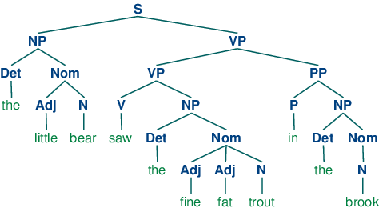
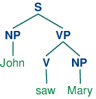
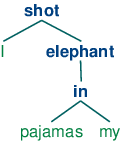
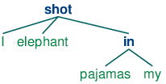

8. Analyzing Sentence Structure
Earlier chapters focused on words: how to identify them, analyze their structure, assign them to lexical categories, and access their meanings. We have also seen how to identify patterns in word sequences or n-grams. However, these methods only scratch the surface of the complex constraints that govern sentences. We need a way to deal with the ambiguity that natural language is famous for. We also need to be able to cope with the fact that there are an unlimited number of possible sentences, and we can only write finite programs to analyze their structures and discover their meanings.
The goal of this chapter is to answer the following questions:
- How can we use a formal grammar to describe the structure of an unlimited set of sentences?
- How do we represent the structure of sentences using syntax trees?
- How do parsers analyze a sentence and automatically build a syntax tree?
Along the way, we will cover the fundamentals of English syntax, and see that there are systematic aspects of meaning that are much easier to capture once we have identified the structure of sentences.
1 Some Grammatical Dilemmas
1.1 Linguistic Data and Unlimited Possibilities
Previous chapters have shown you how to process and analyse text corpora, and we have stressed the challenges for NLP in dealing with the vast amount of electronic language data that is growing daily. Let's consider this data more closely, and make the thought experiment that we have a gigantic corpus consisting of everything that has been either uttered or written in English over, say, the last 50 years. Would we be justified in calling this corpus "the language of modern English"? There are a number of reasons why we might answer No. Recall that in 3, we asked you to search the web for instances of the pattern the of. Although it is easy to find examples on the web containing this word sequence, such as New man at the of IMG (http://www.telegraph.co.uk/sport/2387900/New-man-at-the-of-IMG.html), speakers of English will say that most such examples are errors, and therefore not part of English after all.
Accordingly, we can argue that the "modern English" is not equivalent to the very big set of word sequences in our imaginary corpus. Speakers of English can make judgements about these sequences, and will reject some of them as being ungrammatical.
Equally, it is easy to compose a new sentence and have speakers agree that it is perfectly good English. For example, sentences have an interesting property that they can be embedded inside larger sentences. Consider the following sentences:
| (1) |
|
If we replaced whole sentences with the symbol S, we would see patterns like Andre said S and I think S. These are templates for taking a sentence and constructing a bigger sentence. There are other templates we can use, like S but S, and S when S. With a bit of ingenuity we can construct some really long sentences using these templates. Here's an impressive example from a Winnie the Pooh story by A.A. Milne, In which Piglet is Entirely Surrounded by Water:
[You can imagine Piglet's joy when at last the ship came in sight of him.] In after-years he liked to think that he had been in Very Great Danger during the Terrible Flood, but the only danger he had really been in was the last half-hour of his imprisonment, when Owl, who had just flown up, sat on a branch of his tree to comfort him, and told him a very long story about an aunt who had once laid a seagull's egg by mistake, and the story went on and on, rather like this sentence, until Piglet who was listening out of his window without much hope, went to sleep quietly and naturally, slipping slowly out of the window towards the water until he was only hanging on by his toes, at which moment, luckily, a sudden loud squawk from Owl, which was really part of the story, being what his aunt said, woke the Piglet up and just gave him time to jerk himself back into safety and say, "How interesting, and did she?" when — well, you can imagine his joy when at last he saw the good ship, Brain of Pooh (Captain, C. Robin; 1st Mate, P. Bear) coming over the sea to rescue him...
This long sentence actually has a simple structure that begins S but S when S. We can see from this example that language provides us with constructions which seem to allow us to extend sentences indefinitely. It is also striking that we can understand sentences of arbitrary length that we've never heard before: it's not hard to concoct an entirely novel sentence, one that has probably never been used before in the history of the language, yet all speakers of the language will understand it.
The purpose of a grammar is to give an explicit description of a language. But the way in which we think of a grammar is closely intertwined with what we consider to be a language. Is it a large but finite set of observed utterances and written texts? Is it something more abstract like the implicit knowledge that competent speakers have about grammatical sentences? Or is it some combination of the two? We won't take a stand on this issue, but instead will introduce the main approaches.
In this chapter, we will adopt the formal framework of "generative grammar", in which a "language" is considered to be nothing more than an enormous collection of all grammatical sentences, and a grammar is a formal notation that can be used for "generating" the members of this set. Grammars use recursive productions of the form S → S and S, as we will explore in 3. In 10. we will extend this, to automatically build up the meaning of a sentence out of the meanings of its parts.
1.2 Ubiquitous Ambiguity
A well-known example of ambiguity is shown in (2), from the Groucho Marx movie, Animal Crackers (1930):
| (2) | While hunting in Africa, I shot an elephant in my pajamas. How he got into my pajamas, I don't know. |
Let's take a closer look at the ambiguity in the phrase: I shot an elephant in my pajamas. First we need to define a simple grammar:
|
This grammar permits the sentence to be analyzed in two ways, depending on whether the prepositional phrase in my pajamas describes the elephant or the shooting event.
|
The program produces two bracketed structures, which we can depict as trees, as shown in (3b):
| (3) |
|
Notice that there's no ambiguity concerning the meaning of any of the words; e.g. the word shot doesn't refer to the act of using a gun in the first sentence, and using a camera in the second sentence.
Note
Your Turn: Consider the following sentences and see if you can think of two quite different interpretations: Fighting animals could be dangerous. Visiting relatives can be tiresome. Is ambiguity of the individual words to blame? If not, what is the cause of the ambiguity?
This chapter presents grammars and parsing, as the formal and computational methods for investigating and modeling the linguistic phenomena we have been discussing. As we shall see, patterns of well-formedness and ill-formedness in a sequence of words can be understood with respect to the phrase structure and dependencies. We can develop formal models of these structures using grammars and parsers. As before, a key motivation is natural language understanding. How much more of the meaning of a text can we access when we can reliably recognize the linguistic structures it contains? Having read in a text, can a program "understand" it enough to be able to answer simple questions about "what happened" or "who did what to whom"? Also as before, we will develop simple programs to process annotated corpora and perform useful tasks.
2 What's the Use of Syntax?
2.1 Beyond n-grams
We gave an example in 2. of how to use the frequency information in bigrams to generate text that seems perfectly acceptable for small sequences of words but rapidly degenerates into nonsense. Here's another pair of examples that we created by computing the bigrams over the text of a childrens' story, The Adventures of Buster Brown (http://www.gutenberg.org/files/22816/22816.txt):
| (4) |
|
You intuitively know that these sequences are "word-salad", but you probably find it hard to pin down what's wrong with them. One benefit of studying grammar is that it provides a conceptual framework and vocabulary for spelling out these intuitions. Let's take a closer look at the sequence the worst part and clumsy looking. This looks like a coordinate structure, where two phrases are joined by a coordinating conjunction such as and, but or or. Here's an informal (and simplified) statement of how coordination works syntactically:
Coordinate Structure:
If v1 and v2 are both phrases of grammatical category X, then v1 and v2 is also a phrase of category X.
Here are a couple of examples. In the first, two NPs (noun phrases) have been conjoined to make an NP, while in the second, two APs (adjective phrases) have been conjoined to make an AP.
| (5) |
|
What we can't do is conjoin an NP and an AP, which is why the worst part and clumsy looking is ungrammatical. Before we can formalize these ideas, we need to understand the concept of constituent structure.
Constituent structure is based on the observation that words combine with other words to form units. The evidence that a sequence of words forms such a unit is given by substitutability — that is, a sequence of words in a well-formed sentence can be replaced by a shorter sequence without rendering the sentence ill-formed. To clarify this idea, consider the following sentence:
| (6) | The little bear saw the fine fat trout in the brook. |
The fact that we can substitute He for The little bear indicates that the latter sequence is a unit. By contrast, we cannot replace little bear saw in the same way.
| (7) |
|
In 2.1, we systematically substitute longer sequences by shorter ones in a way which preserves grammaticality. Each sequence that forms a unit can in fact be replaced by a single word, and we end up with just two elements.

Figure 2.1: Substitution of Word Sequences: working from the top row, we can replace particular sequences of words (e.g. the brook) with individual words (e.g. it); repeating this process we arrive at a grammatical two-word sentence.
In 2.2, we have added grammatical category labels to the words we saw in the earlier figure. The labels NP, VP, and PP stand for noun phrase, verb phrase and prepositional phrase respectively.

Figure 2.2: Substitution of Word Sequences Plus Grammatical Categories: This diagram reproduces 2.1 along with grammatical categories corresponding to noun phrases (NP), verb phrases (VP), prepositional phrases (PP), and nominals (Nom).
If we now strip out the words apart from the topmost row, add an S node, and flip the figure over, we end up with a standard phrase structure tree, shown in (8). Each node in this tree (including the words) is called a constituent. The immediate constituents of S are NP and VP.
| (8) |  |
As we will see in the next section, a grammar specifies how the sentence can be subdivided into its immediate constituents, and how these can be further subdivided until we reach the level of individual words.
3 Context Free Grammar
3.1 A Simple Grammar
Let's start off by looking at a simple context-free grammar. By convention, the left-hand-side of the first production is the start-symbol of the grammar, typically S, and all well-formed trees must have this symbol as their root label. In NLTK, context-free grammars are defined in the nltk.grammar module. In 3.1 we define a grammar and show how to parse a simple sentence admitted by the grammar.
| ||
| ||
Example 3.1 (code_cfg1.py): Figure 3.1: A Simple Context-Free Grammar |
The grammar in 3.1 contains productions involving various syntactic categories, as laid out in 3.1.
| Symbol | Meaning | Example |
|---|---|---|
| S | sentence | the man walked |
| NP | noun phrase | a dog |
| VP | verb phrase | saw a park |
| PP | prepositional phrase | with a telescope |
| Det | determiner | the |
| N | noun | dog |
| V | verb | walked |
| P | preposition | in |
A production like VP -> V NP | V NP PP has a disjunction on the righthand side, shown by the | and is an abbreviation for the two productions VP -> V NP and VP -> V NP PP.

Figure 3.2: Recursive Descent Parser Demo: This tool allows you to watch the operation of a recursive descent parser as it grows the parse tree and matches it against the input words.
Note
Your Turn: Try developing a simple grammar of your own, using the recursive descent parser application, nltk.app.rdparser(), shown in 3.2. It comes already loaded with a sample grammar, but you can edit this as you please (using the Edit menu). Change the grammar, and the sentence to be parsed, and run the parser using the autostep button.
If we parse the sentence The dog saw a man in the park using the grammar shown in 3.1, we end up with two trees, similar to those we saw for (3b):
| (9) |
|
Since our grammar licenses two trees for this sentence, the sentence is said to be structurally ambiguous. The ambiguity in question is called a prepositional phrase attachment ambiguity, as we saw earlier in this chapter. As you may recall, it is an ambiguity about attachment since the PP in the park needs to be attached to one of two places in the tree: either as a child of VP or else as a child of NP. When the PP is attached to VP, the intended interpretation is that the seeing event happened in the park. However, if the PP is attached to NP, then it was the man who was in the park, and the agent of the seeing (the dog) might have been sitting on the balcony of an apartment overlooking the park.
3.2 Writing Your Own Grammars
If you are interested in experimenting with writing CFGs, you will find it helpful to create and edit your grammar in a text file, say mygrammar.cfg. You can then load it into NLTK and parse with it as follows:
|
Make sure that you put a .cfg suffix on the filename, and that there are no spaces in the string 'file:mygrammar.cfg'. If the command print(tree) produces no output, this is probably because your sentence sent is not admitted by your grammar. In this case, call the parser with tracing set to be on: rd_parser = nltk.RecursiveDescentParser(grammar1, trace=2). You can also check what productions are currently in the grammar with the command for p in grammar1.productions(): print(p).
When you write CFGs for parsing in NLTK, you cannot combine grammatical categories with lexical items on the righthand side of the same production. Thus, a production such as PP -> 'of' NP is disallowed. In addition, you are not permitted to place multi-word lexical items on the righthand side of a production. So rather than writing NP -> 'New York', you have to resort to something like NP -> 'New_York' instead.
3.3 Recursion in Syntactic Structure
A grammar is said to be recursive if a category occurring on the left hand side of a production also appears on the righthand side of a production, as illustrated in 3.3. The production Nom -> Adj Nom (where Nom is the category of nominals) involves direct recursion on the category Nom, whereas indirect recursion on S arises from the combination of two productions, namely S -> NP VP and VP -> V S.
| ||
Example 3.3 (code_cfg2.py): Figure 3.3: A Recursive Context-Free Grammar |
To see how recursion arises from this grammar, consider the following trees. (10a) involves nested nominal phrases, while (10b) contains nested sentences.
| (10) |
|
We've only illustrated two levels of recursion here, but there's no upper limit on the depth. You can experiment with parsing sentences that involve more deeply nested structures. Beware that the RecursiveDescentParser is unable to handle left-recursive productions of the form X -> X Y; we will return to this in 4.
4 Parsing With Context Free Grammar
A parser processes input sentences according to the productions of a grammar, and builds one or more constituent structures that conform to the grammar. A grammar is a declarative specification of well-formedness — it is actually just a string, not a program. A parser is a procedural interpretation of the grammar. It searches through the space of trees licensed by a grammar to find one that has the required sentence along its fringe.
A parser permits a grammar to be evaluated against a collection of test sentences, helping linguists to discover mistakes in their grammatical analysis. A parser can serve as a model of psycholinguistic processing, helping to explain the difficulties that humans have with processing certain syntactic constructions. Many natural language applications involve parsing at some point; for example, we would expect the natural language questions submitted to a question-answering system to undergo parsing as an initial step.
In this section we see two simple parsing algorithms, a top-down method called recursive descent parsing, and a bottom-up method called shift-reduce parsing. We also see some more sophisticated algorithms, a top-down method with bottom-up filtering called left-corner parsing, and a dynamic programming technique called chart parsing.
4.1 Recursive Descent Parsing
The simplest kind of parser interprets a grammar as a specification of how to break a high-level goal into several lower-level subgoals. The top-level goal is to find an S. The S → NP VP production permits the parser to replace this goal with two subgoals: find an NP, then find a VP. Each of these subgoals can be replaced in turn by sub-sub-goals, using productions that have NP and VP on their left-hand side. Eventually, this expansion process leads to subgoals such as: find the word telescope. Such subgoals can be directly compared against the input sequence, and succeed if the next word is matched. If there is no match the parser must back up and try a different alternative.
The recursive descent parser builds a parse tree during the above process. With the initial goal (find an S), the S root node is created. As the above process recursively expands its goals using the productions of the grammar, the parse tree is extended downwards (hence the name recursive descent). We can see this in action using the graphical demonstration nltk.app.rdparser(). Six stages of the execution of this parser are shown in 4.1.

Figure 4.1: Six Stages of a Recursive Descent Parser: the parser begins with a tree consisting of the node S; at each stage it consults the grammar to find a production that can be used to enlarge the tree; when a lexical production is encountered, its word is compared against the input; after a complete parse has been found, the parser backtracks to look for more parses.
During this process, the parser is often forced to choose between several possible productions. For example, in going from step 3 to step 4, it tries to find productions with N on the left-hand side. The first of these is N → man. When this does not work it backtracks, and tries other N productions in order, until it gets to N → dog, which matches the next word in the input sentence. Much later, as shown in step 5, it finds a complete parse. This is a tree that covers the entire sentence, without any dangling edges. Once a parse has been found, we can get the parser to look for additional parses. Again it will backtrack and explore other choices of production in case any of them result in a parse.
NLTK provides a recursive descent parser:
|
Note
RecursiveDescentParser() takes an optional parameter trace. If trace is greater than zero, then the parser will report the steps that it takes as it parses a text.
Recursive descent parsing has three key shortcomings. First, left-recursive productions like NP -> NP PP send it into an infinite loop. Second, the parser wastes a lot of time considering words and structures that do not correspond to the input sentence. Third, the backtracking process may discard parsed constituents that will need to be rebuilt again later. For example, backtracking over VP -> V NP will discard the subtree created for the NP. If the parser then proceeds with VP -> V NP PP, then the NP subtree must be created all over again.
Recursive descent parsing is a kind of top-down parsing. Top-down parsers use a grammar to predict what the input will be, before inspecting the input! However, since the input is available to the parser all along, it would be more sensible to consider the input sentence from the very beginning. This approach is called bottom-up parsing, and we will see an example in the next section.
4.2 Shift-Reduce Parsing
A simple kind of bottom-up parser is the shift-reduce parser. In common with all bottom-up parsers, a shift-reduce parser tries to find sequences of words and phrases that correspond to the right hand side of a grammar production, and replace them with the left-hand side, until the whole sentence is reduced to an S.
The shift-reduce parser repeatedly pushes the next input word onto a stack (4.1); this is the shift operation. If the top n items on the stack match the n items on the right hand side of some production, then they are all popped off the stack, and the item on the left-hand side of the production is pushed on the stack. This replacement of the top n items with a single item is the reduce operation. This operation may only be applied to the top of the stack; reducing items lower in the stack must be done before later items are pushed onto the stack. The parser finishes when all the input is consumed and there is only one item remaining on the stack, a parse tree with an S node as its root. The shift-reduce parser builds a parse tree during the above process. Each time it pops n items off the stack it combines them into a partial parse tree, and pushes this back on the stack. We can see the shift-reduce parsing algorithm in action using the graphical demonstration nltk.app.srparser(). Six stages of the execution of this parser are shown in 4.2.

Figure 4.2: Six Stages of a Shift-Reduce Parser: the parser begins by shifting the first input word onto its stack; once the top items on the stack match the right hand side of a grammar production, they can be replaced with the left hand side of that production; the parser succeeds once all input is consumed and one S item remains on the stack.
NLTK provides ShiftReduceParser(), a simple implementation of a shift-reduce parser. This parser does not implement any backtracking, so it is not guaranteed to find a parse for a text, even if one exists. Furthermore, it will only find at most one parse, even if more parses exist. We can provide an optional trace parameter that controls how verbosely the parser reports the steps that it takes as it parses a text:
|
Note
Your Turn: Run the above parser in tracing mode to see the sequence of shift and reduce operations, using sr_parse = nltk.ShiftReduceParser(grammar1, trace=2)
A shift-reduce parser can reach a dead end and fail to find any parse, even if the input sentence is well-formed according to the grammar. When this happens, no input remains, and the stack contains items which cannot be reduced to an S. The problem arises because there are choices made earlier that cannot be undone by the parser (although users of the graphical demonstration can undo their choices). There are two kinds of choices to be made by the parser: (a) which reduction to do when more than one is possible (b) whether to shift or reduce when either action is possible.
A shift-reduce parser may be extended to implement policies for resolving such conflicts. For example, it may address shift-reduce conflicts by shifting only when no reductions are possible, and it may address reduce-reduce conflicts by favoring the reduction operation that removes the most items from the stack. (A generalization of shift-reduce parser, a "lookahead LR parser", is commonly used in programming language compilers.)
The advantage of shift-reduce parsers over recursive descent parsers is that they only build structure that corresponds to the words in the input. Furthermore, they only build each sub-structure once, e.g. NP(Det(the), N(man)) is only built and pushed onto the stack a single time, regardless of whether it will later be used by the VP -> V NP PP reduction or the NP -> NP PP reduction.
4.3 The Left-Corner Parser
One of the problems with the recursive descent parser is that it goes into an infinite loop when it encounters a left-recursive production. This is because it applies the grammar productions blindly, without considering the actual input sentence. A left-corner parser is a hybrid between the bottom-up and top-down approaches we have seen.
Grammar grammar1 allows us to produce the following parse of John saw Mary:
| (11) |  |
Recall that the grammar (defined in 3.3) has the following productions for expanding NP:
| (12) |
|
Suppose we ask you to first look at tree (11), and then decide which of the NP productions you'd want a recursive descent parser to apply first — obviously, (12c) is the right choice! How do you know that it would be pointless to apply (12a) or (12b) instead? Because neither of these productions will derive a sequence whose first word is John. That is, we can easily tell that in a successful parse of John saw Mary, the parser has to expand NP in such a way that NP derives the sequence John α. More generally, we say that a category B is a left-corner of a tree rooted in A if A ⇒* B α.
| (13) |
A left-corner parser is a top-down parser with bottom-up filtering. Unlike an ordinary recursive descent parser, it does not get trapped in left recursive productions. Before starting its work, a left-corner parser preprocesses the context-free grammar to build a table where each row contains two cells, the first holding a non-terminal, and the second holding the collection of possible left corners of that non-terminal. 4.1 illustrates this for the grammar from grammar2.
| Category | Left-Corners (pre-terminals) |
|---|---|
| S | NP |
| NP | Det, PropN |
| VP | V |
| PP | P |
Each time a production is considered by the parser, it checks that the next input word is compatible with at least one of the pre-terminal categories in the left-corner table.
4.4 Well-Formed Substring Tables
The simple parsers discussed above suffer from limitations in both completeness and efficiency. In order to remedy these, we will apply the algorithm design technique of dynamic programming to the parsing problem. As we saw in 4.7, dynamic programming stores intermediate results and re-uses them when appropriate, achieving significant efficiency gains. This technique can be applied to syntactic parsing, allowing us to store partial solutions to the parsing task and then look them up as necessary in order to efficiently arrive at a complete solution. This approach to parsing is known as chart parsing. We introduce the main idea in this section; see the online materials available for this chapter for more implementation details.
Dynamic programming allows us to build the PP in my pajamas just once. The first time we build it we save it in a table, then we look it up when we need to use it as a subconstituent of either the object NP or the higher VP. This table is known as a well-formed substring table, or WFST for short. (The term "substring" refers to a contiguous sequence of words within a sentence.) We will show how to construct the WFST bottom-up so as to systematically record what syntactic constituents have been found.
Let's set our input to be the sentence in (2). The numerically specified spans of the WFST are reminiscent of Python's slice notation (3.2). Another way to think about the data structure is shown in 4.3, a data structure known as a chart.

Figure 4.3: The Chart Data Structure: words are the edge labels of a linear graph structure.
In a WFST, we record the position of the words by filling in cells in a triangular matrix: the vertical axis will denote the start position of a substring, while the horizontal axis will denote the end position (thus shot will appear in the cell with coordinates (1, 2)). To simplify this presentation, we will assume each word has a unique lexical category, and we will store this (not the word) in the matrix. So cell (1, 2) will contain the entry V. More generally, if our input string is a0a1 ... an, and our grammar contains a production of the form A → ai, then we add A to the cell (i, `i`+1).
So, for every word in text, we can look up in our grammar what category it belongs to.
|
For our WFST, we create an (n-1) × (n-1) matrix as a list of lists in Python, and initialize it with the lexical categories of each token, in the init_wfst() function in 4.4. We also define a utility function display() to pretty-print the WFST for us. As expected, there is a V in cell (1, 2).
| ||
Example 4.4 (code_wfst.py): Figure 4.4: Acceptor Using Well-Formed Substring Table |
Returning to our tabular representation, given that we have Det in cell (2, 3) for the word an, and N in cell (3, 4) for the word elephant, what should we put into cell (2, 4) for an elephant? We need to find a production of the form A → Det N. Consulting the grammar, we know that we can enter NP in cell (2, 4).
More generally, we can enter A in (i, j) if there is a production A → B C, and we find nonterminal B in (i, k) and C in (k, j). The program in 4.4 uses this rule to complete the WFST. By setting trace to True when calling the function complete_wfst(), we see tracing output that shows the WFST being constructed:
|
For example, this says that since we found Det at wfst[2][3] and N at wfst[3][4], we can add NP to wfst[2][4].
Note
To help us easily retrieve productions by their right hand sides, we create an index for the grammar. This is an example of a space-time trade-off: we do a reverse lookup on the grammar, instead of having to check through the entire list of productions each time we want to look up via the right hand side.

Figure 4.5: The Chart Data Structure: non-terminals are represented as extra edges in the chart.
We conclude that there is a parse for the whole input string once we have constructed an S node in cell (0, 7), showing that we have found a sentence that covers the whole input. The final state of the WFST is depicted in 4.5.
Notice that we have not used any built-in parsing functions here. We've implemented a complete, primitive chart parser from the ground up!
WFST's have several shortcomings. First, as you can see, the WFST is not itself a parse tree, so the technique is strictly speaking recognizing that a sentence is admitted by a grammar, rather than parsing it. Second, it requires every non-lexical grammar production to be binary. Although it is possible to convert an arbitrary CFG into this form, we would prefer to use an approach without such a requirement. Third, as a bottom-up approach it is potentially wasteful, being able to propose constituents in locations that would not be licensed by the grammar.
Finally, the WFST did not represent the structural ambiguity in the sentence (i.e. the two verb phrase readings). The VP in cell (1, 7) was actually entered twice, once for a V NP reading, and once for a VP PP reading. These are different hypotheses, and the second overwrote the first (as it happens this didn't matter since the left hand side was the same.) Chart parsers use a slighly richer data structure and some interesting algorithms to solve these problems (see the Further Reading section at the end of this chapter for details).
Note
Your Turn: Try out the interactive chart parser application nltk.app.chartparser().
5 Dependencies and Dependency Grammar
Phrase structure grammar is concerned with how words and sequences of words combine to form constituents. A distinct and complementary approach, dependency grammar, focusses instead on how words relate to other words. Dependency is a binary asymmetric relation that holds between a head and its dependents. The head of a sentence is usually taken to be the tensed verb, and every other word is either dependent on the sentence head, or connects to it through a path of dependencies.
A dependency representation is a labeled directed graph, where the nodes are the lexical items and the labeled arcs represent dependency relations from heads to dependents. 5.1 illustrates a dependency graph, where arrows point from heads to their dependents.

Figure 5.1: Dependency Structure: arrows point from heads to their dependents; labels indicate the grammatical function of the dependent as subject, object or modifier.
The arcs in 5.1 are labeled with the grammatical function that holds between a dependent and its head. For example, I is the SBJ (subject) of shot (which is the head of the whole sentence), and in is an NMOD (noun modifier of elephant). In contrast to phrase structure grammar, therefore, dependency grammars can be used to directly express grammatical functions as a type of dependency.
Here's one way of encoding a dependency grammar in NLTK — note that it only captures bare dependency information without specifying the type of dependency:
|
A dependency graph is projective if, when all the words are written in linear order, the edges can be drawn above the words without crossing. This is equivalent to saying that a word and all its descendents (dependents and dependents of its dependents, etc.) form a contiguous sequence of words within the sentence. 5.1 is projective, and we can parse many sentences in English using a projective dependency parser. The next example shows how groucho_dep_grammar provides an alternative approach to capturing the attachment ambiguity that we examined earlier with phrase structure grammar.
|
These bracketed dependency structures can also be displayed as trees, where dependents are shown as children of their heads.
| (14) |  |
In languages with more flexible word order than English, non-projective dependencies are more frequent.
Various criteria have been proposed for deciding what is the head H and what is the dependent D in a construction C. Some of the most important are the following:
- H determines the distribution class of C; or alternatively, the external syntactic properties of C are due to H.
- H determines the semantic type of C.
- H is obligatory while D may be optional.
- H selects D and determines whether it is obligatory or optional.
- The morphological form of D is determined by H (e.g. agreement or case government).
When we say in a phrase structure grammar that the immediate constituents of a PP are P and NP, we are implicitly appealing to the head / dependent distinction. A prepositional phrase is a phrase whose head is a preposition; moreover, the NP is a dependent of P. The same distinction carries over to the other types of phrase that we have discussed. The key point to note here is that although phrase structure grammars seem very different from dependency grammars, they implicitly embody a recognition of dependency relations. While CFGs are not intended to directly capture dependencies, more recent linguistic frameworks have increasingly adopted formalisms which combine aspects of both approaches.
5.1 Valency and the Lexicon
Let us take a closer look at verbs and their dependents. The grammar in 3.3 correctly generates examples like (15d).
| (15) |
|
These possibilities correspond to the following productions:
| VP -> V Adj | was |
| VP -> V NP | saw |
| VP -> V S | thought |
| VP -> V NP PP | put |
That is, was can occur with a following Adj, saw can occur with a following NP, thought can occur with a following S and put can occur with a following NP and PP. The dependents Adj, NP, PP and S are often called complements of the respective verbs and there are strong constraints on what verbs can occur with what complements. By contrast with (15d), the word sequences in (16d) are ill-formed:
| (16) |
|
Note
With a little imagination, it is possible to invent contexts in which unusual combinations of verbs and complements are interpretable. However, we assume that the above examples are to be interpreted in neutral contexts.
In the tradition of dependency grammar, the verbs in 5.1 are said to have different valencies. Valency restrictions are not just applicable to verbs, but also to the other classes of heads.
Within frameworks based on phrase structure grammar, various techniques have been proposed for excluding the ungrammatical examples in (16d). In a CFG, we need some way of constraining grammar productions which expand VP so that verbs only co-occur with their correct complements. We can do this by dividing the class of verbs into "subcategories", each of which is associated with a different set of complements. For example, transitive verbs such as chased and saw require a following NP object complement; that is, they are subcategorized for NP direct objects. If we introduce a new category label for transitive verbs, namely TV (for Transitive Verb), then we can use it in the following productions:
VP -> TV NP TV -> 'chased' | 'saw'
Now *Joe thought the bear is excluded since we haven't listed thought as a TV, but Chatterer saw the bear is still allowed. 5.2 provides more examples of labels for verb subcategories.
| Symbol | Meaning | Example |
|---|---|---|
| IV | intransitive verb | barked |
| TV | transitive verb | saw a man |
| DatV | dative verb | gave a dog to a man |
| SV | sentential verb | said that a dog barked |
Valency is a property of lexical items, and we will discuss it further in 9..
Complements are often contrasted with modifiers (or adjuncts), although both are kinds of dependent. Prepositional phrases, adjectives and adverbs typically function as modifiers. Unlike complements, modifiers are optional, can often be iterated, and are not selected for by heads in the same way as complements. For example, the adverb really can be added as a modifer to all the sentence in (17d):
| (17) |
|
The structural ambiguity of PP attachment, which we have illustrated in both phrase structure and dependency grammars, corresponds semantically to an ambiguity in the scope of the modifier.
5.2 Scaling Up
So far, we have only considered "toy grammars," small grammars that illustrate the key aspects of parsing. But there is an obvious question as to whether the approach can be scaled up to cover large corpora of natural languages. How hard would it be to construct such a set of productions by hand? In general, the answer is: very hard. Even if we allow ourselves to use various formal devices that give much more succinct representations of grammar productions, it is still extremely difficult to keep control of the complex interactions between the many productions required to cover the major constructions of a language. In other words, it is hard to modularize grammars so that one portion can be developed independently of the other parts. This in turn means that it is difficult to distribute the task of grammar writing across a team of linguists. Another difficulty is that as the grammar expands to cover a wider and wider range of constructions, there is a corresponding increase in the number of analyses which are admitted for any one sentence. In other words, ambiguity increases with coverage.
Despite these problems, some large collaborative projects have achieved interesting and impressive results in developing rule-based grammars for several languages. Examples are the Lexical Functional Grammar (LFG) Pargram project, the Head-Driven Phrase Structure Grammar (HPSG) LinGO Matrix framework, and the Lexicalized Tree Adjoining Grammar XTAG Project.
6 Grammar Development
Parsing builds trees over sentences, according to a phrase structure grammar. Now, all the examples we gave above only involved toy grammars containing a handful of productions. What happens if we try to scale up this approach to deal with realistic corpora of language? In this section we will see how to access treebanks, and look at the challenge of developing broad-coverage grammars.
6.1 Treebanks and Grammars
The corpus module defines the treebank corpus reader, which contains a 10% sample of the Penn Treebank corpus.
|
We can use this data to help develop a grammar. For example, the program in 6.1 uses a simple filter to find verbs that take sentential complements. Assuming we already have a production of the form VP -> Vs S, this information enables us to identify particular verbs that would be included in the expansion of Vs.
| ||
| ||
Example 6.1 (code_sentential_complement.py): Figure 6.1: Searching a Treebank to find Sentential Complements |
The Prepositional Phrase Attachment Corpus, nltk.corpus.ppattach is another source of information about the valency of particular verbs. Here we illustrate a technique for mining this corpus. It finds pairs of prepositional phrases where the preposition and noun are fixed, but where the choice of verb determines whether the prepositional phrase is attached to the VP or to the NP.
|
Amongst the output lines of this program we find offer-from-group N: ['rejected'] V: ['received'], which indicates that received expects a separate PP complement attached to the VP, while rejected does not. As before, we can use this information to help construct the grammar.
The NLTK corpus collection includes data from the PE08 Cross-Framework and Cross Domain Parser Evaluation Shared Task. A collection of larger grammars has been prepared for the purpose of comparing different parsers, which can be obtained by downloading the large_grammars package (e.g. python -m nltk.downloader large_grammars).
The NLTK corpus collection also includes a sample from the Sinica Treebank Corpus, consisting of 10,000 parsed sentences drawn from the Academia Sinica Balanced Corpus of Modern Chinese. Let's load and display one of the trees in this corpus.
|

6.2 Pernicious Ambiguity
Unfortunately, as the coverage of the grammar increases and the length of the input sentences grows, the number of parse trees grows rapidly. In fact, it grows at an astronomical rate.
Let's explore this issue with the help of a simple example. The word fish is both a noun and a verb. We can make up the sentence fish fish fish, meaning fish like to fish for other fish. (Try this with police if you prefer something more sensible.) Here is a toy grammar for the "fish" sentences.
|
Now we can try parsing a longer sentence, fish fish fish fish fish, which amongst other things, means 'fish that other fish fish are in the habit of fishing fish themselves'. We use the NLTK chart parser, which was mentioned earlier in this chapter. This sentence has two readings.
|
As the length of this sentence goes up (3, 5, 7, ...) we get the following numbers of parse trees: 1; 2; 5; 14; 42; 132; 429; 1,430; 4,862; 16,796; 58,786; 208,012; ... (These are the Catalan numbers, which we saw in an exercise in 4). The last of these is for a sentence of length 23, the average length of sentences in the WSJ section of Penn Treebank. For a sentence of length 50 there would be over 1012 parses, and this is only half the length of the Piglet sentence (1), which young children process effortlessly. No practical NLP system could construct millions of trees for a sentence and choose the appropriate one in the context. It's clear that humans don't do this either!
Note that the problem is not with our choice of example. (Church & Patil, 1982) point out that the syntactic ambiguity of PP attachment in sentences like (18) also grows in proportion to the Catalan numbers.
| (18) | Put the block in the box on the table. |
So much for structural ambiguity; what about lexical ambiguity? As soon as we try to construct a broad-coverage grammar, we are forced to make lexical entries highly ambiguous for their part of speech. In a toy grammar, a is only a determiner, dog is only a noun, and runs is only a verb. However, in a broad-coverage grammar, a is also a noun (e.g. part a), dog is also a verb (meaning to follow closely), and runs is also a noun (e.g. ski runs). In fact, all words can be referred to by name: e.g. the verb 'ate' is spelled with three letters; in speech we do not need to supply quotation marks. Furthermore, it is possible to verb most nouns. Thus a parser for a broad-coverage grammar will be overwhelmed with ambiguity. Even complete gibberish will often have a reading, e.g. the a are of I. As (Klavans & Resnik, 1996) has pointed out, this is not word salad but a grammatical noun phrase, in which are is a noun meaning a hundredth of a hectare (or 100 sq m), and a and I are nouns designating coordinates, as shown in 6.2.

Figure 6.2: "The a are of I": a schematic drawing of 27 paddocks, each being one "are" in size, and each identified using coordinates; the top left cell is the a "are" of column I (after Abney).
Even though this phrase is unlikely, it is still grammatical and a broad-coverage parser should be able to construct a parse tree for it. Similarly, sentences that seem to be unambiguous, such as John saw Mary, turn out to have other readings we would not have anticipated (as Abney explains). This ambiguity is unavoidable, and leads to horrendous inefficiency in parsing seemingly innocuous sentences. The solution to these problems is provided by probabilistic parsing, which allows us to rank the parses of an ambiguous sentence on the basis of evidence from corpora.
6.3 Weighted Grammar
As we have just seen, dealing with ambiguity is a key challenge in developing broad coverage parsers. Chart parsers improve the efficiency of computing multiple parses of the same sentences, but they are still overwhelmed by the sheer number of possible parses. Weighted grammars and probabilistic parsing algorithms have provided an effective solution to these problems.
Before looking at these, we need to understand why the notion of grammaticality could be gradient. Considering the verb give. This verb requires both a direct object (the thing being given) and an indirect object (the recipient). These complements can be given in either order, as illustrated in (19). In the "prepositional dative" form in (19a), the direct object appears first, followed by a prepositional phrase containing the indirect object.
| (19) |
|
In the "double object" form in (19b), the indirect object appears first, followed by the direct object. In the above case, either order is acceptable. However, if the indirect object is a pronoun, there is a strong preference for the double object construction:
| (20) |
|
Using the Penn Treebank sample, we can examine all instances of prepositional dative and double object constructions involving give, as shown in 6.3.
| ||
| ||
Example 6.3 (code_give.py): Figure 6.3: Usage of Give and Gave in the Penn Treebank sample |
We can observe a strong tendency for the shortest complement to appear first. However, this does not account for a form like give NP: federal judges / NP: a raise, where animacy may play a role. In fact there turn out to be a large number of contributing factors, as surveyed by (Bresnan & Hay, 2006). Such preferences can be represented in a weighted grammar.
A probabilistic context free grammar (or PCFG) is a context free grammar that associates a probability with each of its productions. It generates the same set of parses for a text that the corresponding context free grammar does, and assigns a probability to each parse. The probability of a parse generated by a PCFG is simply the product of the probabilities of the productions used to generate it.
The simplest way to define a PCFG is to load it from a specially formatted string consisting of a sequence of weighted productions, where weights appear in brackets, as shown in 6.4.
| ||
| ||
Example 6.4 (code_pcfg1.py): Figure 6.4: Defining a Probabilistic Context Free Grammar (PCFG) |
It is sometimes convenient to combine multiple productions into a single line, e.g. VP -> TV NP [0.4] | IV [0.3] | DatV NP NP [0.3]. In order to ensure that the trees generated by the grammar form a probability distribution, PCFG grammars impose the constraint that all productions with a given left-hand side must have probabilities that sum to one. The grammar in 6.4 obeys this constraint: for S, there is only one production, with a probability of 1.0; for VP, 0.4+0.3+0.3=1.0; and for NP, 0.8+0.2=1.0. The parse tree returned by parse() includes probabilities:
|
Now that parse trees are assigned probabilities, it no longer matters that there may be a huge number of possible parses for a given sentence. A parser will be responsible for finding the most likely parses.
7 Summary
- Sentences have internal organization that can be represented using a tree. Notable features of constituent structure are: recursion, heads, complements and modifiers.
- A grammar is a compact characterization of a potentially infinite set of sentences; we say that a tree is well-formed according to a grammar, or that a grammar licenses a tree.
- A grammar is a formal model for describing whether a given phrase can be assigned a particular constituent or dependency structure.
- Given a set of syntactic categories, a context-free grammar uses a set of productions to say how a phrase of some category A can be analyzed into a sequence of smaller parts α1 ... αn.
- A dependency grammar uses productions to specify what the dependents are of a given lexical head.
- Syntactic ambiguity arises when one sentence has more than one syntactic analysis (e.g. prepositional phrase attachment ambiguity).
- A parser is a procedure for finding one or more trees corresponding to a grammatically well-formed sentence.
- A simple top-down parser is the recursive descent parser, which recursively expands the start symbol (usually S) with the help of the grammar productions, and tries to match the input sentence. This parser cannot handle left-recursive productions (e.g., productions such as NP -> NP PP). It is inefficient in the way it blindly expands categories without checking whether they are compatible with the input string, and in repeatedly expanding the same non-terminals and discarding the results.
- A simple bottom-up parser is the shift-reduce parser, which shifts input onto a stack and tries to match the items at the top of the stack with the right hand side of grammar productions. This parser is not guaranteed to find a valid parse for the input even if one exists, and builds substructure without checking whether it is globally consistent with the grammar.
8 Further Reading
Extra materials for this chapter are posted at http://nltk.org/, including links to freely available resources on the web. For more examples of parsing with NLTK, please see the Parsing HOWTO at http://nltk.org/howto.
There are many introductory books on syntax. (O'Grady et al, 2004) is a general introduction to linguistics, while (Radford, 1988) provides a gentle introduction to transformational grammar, and can be recommended for its coverage of transformational approaches to unbounded dependency constructions. The most widely used term in linguistics for formal grammar is generative grammar, though it has nothing to do with generation (Chomsky, 1965). The framework of X-bar Syntax is due to (Jacobs & Rosenbaum, 1970), and is explored at greater length in (Jackendoff, 1977) (The primes we use replace Chomsky's typographically more demanding horizontal bars.)
(Burton-Roberts, 1997) is a practically oriented textbook on how to analyze constituency in English, with extensive exemplification and exercises. (Huddleston & Pullum, 2002) provides an up-to-date and comprehensive analysis of syntactic phenomena in English.
Chapter 12 of (Jurafsky & Martin, 2008) covers formal grammars of English; Sections 13.1-3 cover simple parsing algorithms and techniques for dealing with ambiguity; Chapter 14 covers statistical parsing; Chapter 16 covers the Chomsky hierarchy and the formal complexity of natural language. (Levin, 1993) has categorized English verbs into fine-grained classes, according to their syntactic properties.
There are several ongoing efforts to build large-scale rule-based grammars, e.g. the LFG Pargram project http://www2.parc.com/istl/groups/nltt/pargram/, the HPSG LinGO Matrix framework http://www.delph-in.net/matrix/ and the XTAG Project http://www.cis.upenn.edu/~xtag/.
9 Exercises
☼ Can you come up with grammatical sentences that have probably never been uttered before? (Take turns with a partner.) What does this tell you about human language?
☼ Recall Strunk and White's prohibition against sentence-initial however used to mean "although". Do a web search for however used at the start of the sentence. How widely used is this construction?
☼ Consider the sentence Kim arrived or Dana left and everyone cheered. Write down the parenthesized forms to show the relative scope of and and or. Generate tree structures corresponding to both of these interpretations.
☼ The Tree class implements a variety of other useful methods. See the Tree help documentation for more details, i.e. import the Tree class and then type help(Tree).
☼ In this exercise you will manually construct some parse trees.
- Write code to produce two trees, one for each reading of the phrase old men and women
- Encode any of the trees presented in this chapter as a labeled bracketing and use nltk.Tree() to check that it is well-formed. Now use draw() to display the tree.
- As in (a) above, draw a tree for The woman saw a man last Thursday.
☼ Write a recursive function to traverse a tree and return the depth of the tree, such that a tree with a single node would have depth zero. (Hint: the depth of a subtree is the maximum depth of its children, plus one.)
☼ Analyze the A.A. Milne sentence about Piglet, by underlining all of the sentences it contains then replacing these with S (e.g. the first sentence becomes S when:lx` S). Draw a tree structure for this "compressed" sentence. What are the main syntactic constructions used for building such a long sentence?
☼ In the recursive descent parser demo, experiment with changing the sentence to be parsed by selecting Edit Text in the Edit menu.
☼ Can the grammar in grammar1 be used to describe sentences that are more than 20 words in length?
☼ Use the graphical chart-parser interface to experiment with different rule invocation strategies. Come up with your own strategy that you can execute manually using the graphical interface. Describe the steps, and report any efficiency improvements it has (e.g. in terms of the size of the resulting chart). Do these improvements depend on the structure of the grammar? What do you think of the prospects for significant performance boosts from cleverer rule invocation strategies?
☼ With pen and paper, manually trace the execution of a recursive descent parser and a shift-reduce parser, for a CFG you have already seen, or one of your own devising.
☼ We have seen that a chart parser adds but never removes edges from a chart. Why?
☼ Consider the sequence of words: Buffalo buffalo Buffalo buffalo buffalo buffalo Buffalo buffalo. This is a grammatically correct sentence, as explained at http://en.wikipedia.org/wiki/Buffalo_buffalo_Buffalo_buffalo_buffalo_buffalo_Buffalo_buffalo. Consider the tree diagram presented on this Wikipedia page, and write down a suitable grammar. Normalize case to lowercase, to simulate the problem that a listener has when hearing this sentence. Can you find other parses for this sentence? How does the number of parse trees grow as the sentence gets longer? (More examples of these sentences can be found at http://en.wikipedia.org/wiki/List_of_homophonous_phrases).
◑ You can modify the grammar in the recursive descent parser demo by selecting Edit Grammar in the Edit menu. Change the second expansion production, namely NP -> Det N PP, to NP -> NP PP. Using the Step button, try to build a parse tree. What happens?
◑ Extend the grammar in grammar2 with productions that expand prepositions as intransitive, transitive and requiring a PP complement. Based on these productions, use the method of the preceding exercise to draw a tree for the sentence Lee ran away home.
◑ Pick some common verbs and complete the following tasks:
- Write a program to find those verbs in the Prepositional Phrase Attachment Corpus nltk.corpus.ppattach. Find any cases where the same verb exhibits two different attachments, but where the first noun, or second noun, or preposition, stay unchanged (as we saw in our discussion of syntactic ambiguity in 2).
- Devise CFG grammar productions to cover some of these cases.
◑ Write a program to compare the efficiency of a top-down chart parser compared with a recursive descent parser (4). Use the same grammar and input sentences for both. Compare their performance using the timeit module (see 4.7 for an example of how to do this).
◑ Compare the performance of the top-down, bottom-up, and left-corner parsers using the same grammar and three grammatical test sentences. Use timeit to log the amount of time each parser takes on the same sentence. Write a function that runs all three parsers on all three sentences, and prints a 3-by-3 grid of times, as well as row and column totals. Discuss your findings.
◑ Read up on "garden path" sentences. How might the computational work of a parser relate to the difficulty humans have with processing these sentences? http://en.wikipedia.org/wiki/Garden_path_sentence
◑ To compare multiple trees in a single window, we can use the draw_trees() method. Define some trees and try it out:
>>> from nltk.draw.tree import draw_trees >>> draw_trees(tree1, tree2, tree3)
◑ Using tree positions, list the subjects of the first 100 sentences in the Penn treebank; to make the results easier to view, limit the extracted subjects to subtrees whose height is 2.
◑ Inspect the Prepositional Phrase Attachment Corpus and try to suggest some factors that influence PP attachment.
◑ In this section we claimed that there are linguistic regularities that cannot be described simply in terms of n-grams. Consider the following sentence, particularly the position of the phrase in his turn. Does this illustrate a problem for an approach based on n-grams?
What was more, the in his turn somewhat youngish Nikolay Parfenovich also turned out to be the only person in the entire world to acquire a sincere liking to our "discriminated-against" public procurator. (Dostoevsky: The Brothers Karamazov)
◑ Write a recursive function that produces a nested bracketing for a tree, leaving out the leaf nodes, and displaying the non-terminal labels after their subtrees. So the above example about Pierre Vinken would produce: [[[NNP NNP]NP , [ADJP [CD NNS]NP JJ]ADJP ,]NP-SBJ MD [VB [DT NN]NP [IN [DT JJ NN]NP]PP-CLR [NNP CD]NP-TMP]VP .]S Consecutive categories should be separated by space.
◑ Download several electronic books from Project Gutenberg. Write a program to scan these texts for any extremely long sentences. What is the longest sentence you can find? What syntactic construction(s) are responsible for such long sentences?
◑ Modify the functions init_wfst() and complete_wfst() so that the contents of each cell in the WFST is a set of non-terminal symbols rather than a single non-terminal.
◑ Consider the algorithm in 4.4. Can you explain why parsing context-free grammar is proportional to n3, where n is the length of the input sentence.
◑ Process each tree of the Treebank corpus sample nltk.corpus.treebank and extract the productions with the help of Tree.productions(). Discard the productions that occur only once. Productions with the same left hand side, and similar right hand sides can be collapsed, resulting in an equivalent but more compact set of rules. Write code to output a compact grammar.
★ One common way of defining the subject of a sentence S in English is as the noun phrase that is the child of S and the sibling of VP. Write a function that takes the tree for a sentence and returns the subtree corresponding to the subject of the sentence. What should it do if the root node of the tree passed to this function is not S, or it lacks a subject?
★ Write a function that takes a grammar (such as the one defined in 3.1) and returns a random sentence generated by the grammar. (Use grammar.start() to find the start symbol of the grammar; grammar.productions(lhs) to get the list of productions from the grammar that have the specified left-hand side; and production.rhs() to get the right-hand side of a production.)
★ Implement a version of the shift-reduce parser using backtracking, so that it finds all possible parses for a sentence, what might be called a "recursive ascent parser." Consult the Wikipedia entry for backtracking at http://en.wikipedia.org/wiki/Backtracking
★ As we saw in 7., it is possible to collapse chunks down to their chunk label. When we do this for sentences involving the word gave, we find patterns such as the following:
gave NP gave up NP in NP gave NP up gave NP NP gave NP to NP
- Use this method to study the complementation patterns of a verb of interest, and write suitable grammar productions. (This task is sometimes called lexical acquisition.)
- Identify some English verbs that are near-synonyms, such as the dumped/filled/loaded example from earlier in this chapter. Use the chunking method to study the complementation patterns of these verbs. Create a grammar to cover these cases. Can the verbs be freely substituted for each other, or are their constraints? Discuss your findings.
★ Develop a left-corner parser based on the recursive descent parser, and inheriting from ParseI.
★ Extend NLTK's shift-reduce parser to incorporate backtracking, so that it is guaranteed to find all parses that exist (i.e. it is complete).
★ Modify the functions init_wfst() and complete_wfst() so that when a non-terminal symbol is added to a cell in the WFST, it includes a record of the cells from which it was derived. Implement a function that will convert a WFST in this form to a parse tree.
About this document...
UPDATED FOR NLTK 3.0. This is a chapter from Natural Language Processing with Python, by Steven Bird, Ewan Klein and Edward Loper, Copyright © 2019 the authors. It is distributed with the Natural Language Toolkit [http://nltk.org/], Version 3.0, under the terms of the Creative Commons Attribution-Noncommercial-No Derivative Works 3.0 United States License [http://creativecommons.org/licenses/by-nc-nd/3.0/us/].
This document was built on Wed 4 Sep 2019 11:40:48 ACST